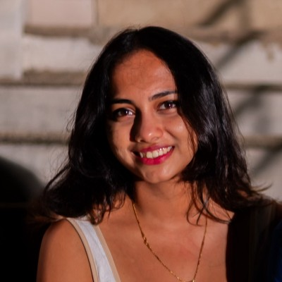

STaTS: Structure-aware temporal sequence summarization via statistical window merging
Pattern Recognition Letters
Machine Learning Engineer · Generative AI · Data Science · Computer Vision
Machine learning professional with 6+ years of experience: nearly four years at Cognizant Technology Solutions delivering data analytics, predictive modeling and generative AI for enterprise financial-services clients, followed by three years at Auburn University (USA) as a machine learning engineer and technical instructor.
Built Retrieval-Augmented Generation pipelines and fine-tuned large language models for enterprise workflows, cut recurring IT incidents by 25%, and designed a time-series compression framework that shrinks model input up to 30x while keeping 85–90% of accuracy. M.S. in Computer Science (USA), GPA 3.83.
